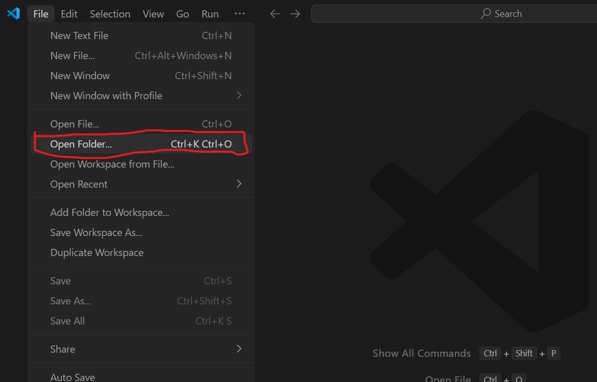
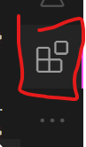

javascript_study みたいな名前でフォルダを作っておくと良いですよ。- 

ここでは、ウェブアプリケーションを作るための第一歩、JavaScriptの学習を一緒に進めていきます。JavaScriptは、ウェブページをインタラクティブにするだけでなく、ゲームを作ったり、サーバーサイドで動いたりと、本当にたくさんのことができるパワフルな言語なんです。
ここでは、実際にJavascriptの学習を進める前の、準備や心構えについて解説していきます。この部分は、後々本当に大切になる部分です。最初は、少し面倒で、「本当に必要なの？」と思うかもしれませんが、もし困ったときにはここに戻ってくるとヒントになることもあると思います。
console.log()学習プランで目指すこと：
各段階でどんなスキルが身につくのか、どんなことができるようになるのか、ワクワクしながら一緒に進んでいきましょう！
**これからの資料は網羅的に作りました。初心者でも理解はできますが、本当に時間がかかって大変だと思います。**適当にプログラミングしたいのだったら、全部流し読みして、演習だけでもやってもらえれば大丈夫なはずです。とはいえ、真のエンジニアになりたい人は一個一個理解しながら（時には分からない言葉を、調べたり、人に聞いたりしながら）進めて行ってほしいです。
忠告:Javascriptはたとえば、Pythonと比べると、とても面倒くさい言語です。俺は嫌い。だけど、実際WEB開発で広く使われてしまっている現実があるので、勉強しなければなりません。(まず最初にPythonを勉強するのもありだと思います。)
プログラムのコードは、専用の「テキストエディタ」というソフトを使って書きます。世の中には色々なエディタがありますが、ここでは世界中の多くの開発者に愛用されているVisual Studio Code (VSCode) を使います。無料で高機能、そして何より使いやすいのが魅力です！
VSCodeのインストール手順:
VSCodeの基本操作とターミナル連携:
VSCodeは多機能ですが、最初はこの2つを覚えておけば大丈夫。
javascript_study みたいな名前でフォルダを作っておくと良いですよ。VSCodeをさらにパワーアップ！推奨拡張機能:
VSCodeは「拡張機能」を追加することで、さらに便利になります。自転車にカゴやライトをつけるようなイメージですね。ここでは、JavaScript学習に役立つ3つの拡張機能を紹介します。左側の四角いアイコン（拡張機能ビュー）から検索してインストールしてください。


.eslintrc.jsなど）を作ることで、チェックのルールを細かくカスタマイズできますが、最初はデフォルトの設定でも十分です。もしチームで開発するようになったら、ルールを統一するとコードの品質が保てますよ。JavaScriptは主にウェブブラウザ上で動きます。皆さんが普段インターネットを見るときに使っているアレですね。開発にはGoogle ChromeかMicrosoft Edgeがおすすめです。どちらも高機能な「開発者ツール」が内蔵されていて、JavaScriptのデバッグ（エラー探しや動作確認）に非常に役立ちます。
開発者ツールの基本操作:
開発者ツールは、ウェブページ上で右クリックして「検証」や「要素を調査」などを選ぶか、キーボードショートカット（WindowsならF12キー、MacならOption + Command + Iなど）で開けます。
console.log()で値を確認したりする場所です。JavaScript学習では一番お世話になるタブかもしれません。
「JavaScriptってブラウザで動くんじゃないの？」と思った人もいるでしょう。その通りですが、実はNode.jsというものを使うと、ブラウザの外でもJavaScriptを動かすことができるんです！
Node.jsとは？
簡単に言うと、「パソコン上で直接JavaScriptを実行するための環境」です。これがあると、ウェブサイトの裏側（サーバー）をJavaScriptで動かしたり、開発を助ける便利な道具（ビルドツールなど）を使ったりできるようになります。
Node.jsのインストール:
Node.jsの公式サイトからインストーラーをダウンロードします。

ダウンロードしたインストーラーを実行します。
nodeコマンドが使えなくて本当に困ります。（もし忘れてしまったら、再インストールするか、手動で環境変数PATHを設定する必要がありますが、それはちょっと面倒です…）インストールが完了したら、VSCodeのターミナルやコマンドプロンプトで以下のコマンドを打って、バージョンが表示されれば成功です。
node -v
npm -v
node -v はNode.js本体のバージョン、npm -v はNode.jsと一緒にインストールされる「npm (Node Package Manager)」というツールのバージョンを表示します。npmは、便利なJavaScriptライブラリ（部品）を管理するのに使います。これはまた後で詳しく説明しますね。
簡単なJavaScriptファイルの実行方法:
VSCodeで新しいファイルを作り、例えば hello.js という名前で保存します。
ファイルに以下のように書いてみましょう。
// filepath: (どこかのフォルダ)/hello.js
console.log("Hello from Node.js!");
ここで、ファイルを保存することを忘れない。Control + S (Windows) または Command + S (Mac) で保存できます。
VSCodeのターミナルで、hello.js を保存したフォルダに移動していることを確認し、以下のコマンドを実行します。
node hello.js
ターミナルに "Hello from Node.js!" と表示されれば大成功です！
Node.jsの役割の展望:
「今は簡単なJS実行に使うけど、実はウェブサイトの裏側（、企業や大学のでっかいパソコン上のサーバー）を動かしたり、開発を助ける便利な道具（ビルドツール）を動かしたりする、とてもパワフルなやつなんだ。その話はまたずっと後でね！」という感じで、今は「ブラウザ以外でもJavaScriptを動かせるんだな」くらいに思っておけばOKです。
プログラミングをしていると、「あー！昨日までは動いてたのに、どこを触ったら動かなくなったんだっけ…？」「前の状態に戻したい！」なんてことがしょっちゅう起こります。そんな時に役立つのが「バージョン管理システム」です。
Git (ギット) は、ファイルの変更履歴を記録・管理してくれるシステムです。「あの時の状態に戻りたい！」とか「どこを変更したか確認したい！」、「データを皆で共有しながら開発したい」などが簡単にできます。
Gitのインストール:
git --version と入力し、バージョンが表示されれば成功です。Gitの初期設定 (初回のみ):
Gitを使う前に、自分の名前とメールアドレスを登録しておきましょう。これは、誰が変更を加えたのかを記録するために使われます。
git config --global user.name "あなたの名前"
git config --global user.email "あなたのメールアドレス"
Gitの基本コマンド (まずはこれだけ！):
git init: 「このフォルダをGitで管理し始めます！」という宣言。作業フォルダのトップで最初に一度だけ実行します。.git という隠しフォルダが作られ、ここに履歴が保存されます。git status: 「今のフォルダの状態はどうなってる？」とGitに尋ねるコマンド。変更されたファイルや、まだGitに登録されていないファイルなどを教えてくれます。こまめに確認する癖をつけると良いですよ。git add <ファイル名> または git add .: 「このファイル（または全ての変更されたファイル）の今の状態を、次の記録（コミット）の対象にします！」とGitに伝えるコマンド。ステージングエリアという場所にファイルが追加されるイメージです。git commit -m "変更内容を説明するメッセージ": 「git addしたファイル群の今の状態を、メッセージ付きで記録します！」というコマンド。これがタイムマシンのセーブポイントのようなものです。メッセージは、後から見て「ああ、この時こんな変更をしたんだな」と分かるように具体的に書くのがコツです。例: "ログイン機能のボタンを追加"git log: 「今までの記録（コミット履歴）を見せて！」というコマンド。誰がいつどんな変更をしたかの一覧が表示されます。git diff: 「前回記録した状態から、どこがどう変わったの？」と、変更差分を表示するコマンド。ブランチ戦略入門 (ちょっとだけ先取り):
Gitには「ブランチ」という便利な機能があります。これは、今の作業本流（例えばmainブランチ）から分岐して、新しい機能を試したり、バグを修正したりするための専用の作業スペースを作るイメージです。
git branch <新しいブランチ名>: 新しいブランチを作成します。例: git branch feature/login-form (ログインフォームを作るぞ！というブランチ)git checkout <ブランチ名>: 作業するブランチを切り替えます。「ログインフォームを作るぞ！」という時に、本流から分岐してfeature/login-formという専用の作業スペースを作るイメージです。もしそこで何か失敗しても、本流のmainブランチは安全なまま！安心して新しいことに挑戦できますね。このブランチの詳しい使い方は、また別の機会に。
GitHub (ギットハブ) は、Gitで作ったリポジトリ（変更履歴が保存されているフォルダ）をインターネット上に保存・公開できるサービスです。
GitHubでできること:
GitHubの始め方:
アカウント作成: GitHubの公式サイト (https://github.com/) でアカウントを作成しましょう。メールアドレスとパスワード、ユーザー名を決めます。
リモートリポジトリ作成: GitHub上で、ローカル（自分のPC）のGitリポジトリに対応する「リモートリポジトリ」を作成します。サイト右上の「+」アイコンから「New repository」を選び、リポジトリ名などを設定します。
ローカルリポジトリとリモートリポジトリを接続:
リモートリポジトリを作成すると、https://github.com/あなたのユーザー名/リポジトリ名.git のようなURLが表示されます。これをコピーしておきます。
VSCodeのターミナルで、Git管理しているローカルの作業フォルダに移動し、以下のコマンドを実行します。
git remote add origin <コピーしたURL>
これは、「originという名前で、さっき作ったGitHub上のリモートリポジトリを登録しますよ」という意味です。
ローカルの変更をGitHubにアップロード (Push):
git push -u origin main
これは、「ローカルのmainブランチの内容を、origin（つまりGitHub上のリポジトリ）にアップロード（プッシュ）しますよ」という意味です。-uオプションは最初の一回だけでOKで、次回からは git push だけで済むようになります。
最初はコマンドが多くて大変かもしれませんが、使いながら少しずつ覚えていきましょう！「とりあえずgit add .してgit commit -m "メッセージ"してgit pushする」という流れを覚えておけば、基本的なバックアップはできますよ。
プログラミングにエラーはつきものです。どんなベテラン開発者でも、必ずどこかで間違えたり、思った通りに動かなかったりします。大切なのは、エラーを恐れずに、原因を見つけ出して修正する「デバッグ」のスキルを身につけることです。
console.log()console.log() は、JavaScriptで最もシンプルかつ強力なデバッグツールの一つです。「プログラムのこの時点で、この変数の値はどうなってるかな？」「この処理はちゃんと通ってるかな？」というのを確認したいときに使います。
ここでいろいろなコードを示しますが、まだ理解しなくても大丈夫です。最初はただ、コピーして貼り付けて実行してみてください。
let myName = "高専太郎";
console.log(myName); // ターミナルやブラウザのコンソールに "高専太郎" と表示される
let score = 85;
console.log("現在のスコア:", score); // "現在のスコア: 85" と表示される
function add(a, b) {
console.log("add関数が呼び出されました。引数a:", a, "引数b:", b);
let result = a + b;
console.log("計算結果:", result);
return result;
}
add(10, 5);
ポイント: 配列やオブジェクトのような複雑なデータを見たいときは、console.table() を使うと表形式で分かりやすく表示してくれます。
const users = [
{name: "Alice", age: 30, city: "Tokyo"},
{name: "Bob", age: 25, city: "Osaka"}
];
console.table(users);
!console.table(users)の出力例
console.log() は、プログラムの途中に仕掛ける「探偵の聞き込み」のようなものです。怪しい場所にどんどん仕掛けて、手がかりを集めましょう！
プログラムがエラーで止まると、赤い文字で何やら難しいメッセージが表示されてドキッとするかもしれません。でも、エラーメッセージは敵ではなく、問題解決のための最大のヒントなんです！
エラーメッセージを読む習慣をつけよう:
エラーメッセージには、主に以下の情報が含まれています。
ReferenceError, TypeError, SyntaxError)。myFunction is not defined, Cannot read property 'name' of undefined)。例えば、こんなエラーが出たとします。
ReferenceError: myFunction is not defined (at script.js:10)
これは、「script.jsファイルの10行目で、myFunctionという名前のものが見つからないよ（定義されてないよ）」というエラーです。この情報をもとに、script.jsの10行目あたりを見直して、「関数名や変数名のタイプミスはないかな？」「myFunctionを定義する前に呼び出そうとしてないかな？」と確認できます。
最初は英語で難しく感じるかもしれませんが、よく出るエラーはパターンがあるので、だんだん慣れてきます。エラーメッセージをGoogleで検索してみるのも有効な手段ですよ。
console.log() も便利ですが、もっと詳しくプログラムの動きを調べたいときには、ブラウザの開発者ツールに内蔵されている「デバッガ」が役立ちます。
デバッガの主な機能:
デバッガは、まるでプログラムの内部を透視できるレントゲンのようなものです。使いこなせるようになると、問題解決のスピードが格段に上がりますよ！
実は、VSCodeにも強力なデバッガ機能が内蔵されていて、特にNode.jsで動かすJavaScriptのデバッグに便利です。ブラウザのデバッガと似たような感覚で、ブレークポイントを設定したり、ステップ実行したりできます。
launch.jsonという設定ファイルが作られることがあります）F5キー）すると、プログラムがブレークポイントで一時停止し、変数の中身を見たり、ステップ実行したりできます。VSCodeのデバッガは、サーバーサイドのコードや、ちょっと複雑なスクリプトをデバッグする際に非常に強力です。
複雑な問題に直面したとき、一度に全部解決しようとするとパニックになってしまいます。そんな時は、問題をできるだけ小さな部分に分けて、一つずつ確認していくのがコツです。
「この大きな機能が動かない…」 → 「まず、この機能Aの部分は単体で動くかな？」 → 「機能Aの中の、この関数Xは正しい値を返してるかな？」 → 「関数Xに渡しているデータYは正しい形式かな？」
というように、原因となっていそうな箇所を絞り込んでいきます。console.log()やデバッガを使いながら、一つ一つ仮説を立てて検証していく地道な作業が、結局は解決への一番の近道だったりします。
さあ、道具も揃ったし、トラブル対処法も少し学びました。最後に、この長いJavaScript学習の旅を楽しみながら進むための心構えをお伝えします。
この学習プランは、基礎から応用へと段階的に進むように作られています。焦らず、各章の内容をじっくりと消化していくことが大切です。もし分からないことがあっても、すぐに諦めずに、少し時間を置いてみたり、別の角度から考えてみたりしましょう。
プログラミングは、スポーツや楽器の練習と似ています。本を読んだり説明を聞いたりするだけでは、なかなか上達しません。実際に自分でコードを書いて、動かしてみて、エラーを出して、それを修正して…という経験を繰り返すことが何よりも重要です。
この資料に出てくるコード例は、ただ眺めるだけでなく、ぜひ自分の手で打ち込んでみてください。そして、少し内容を変えてみたらどうなるか、色々試してみるのがおすすめです。「百聞は一見にしかず、百見は一触にしかず」です！
学習を続けていると、時には「難しいな…」「自分には向いてないかも…」と感じることもあるかもしれません。そんな時は、小さな目標を立てて、それをクリアする喜びを味わうのが効果的です。
「今日はこの関数を理解できた！」「エラーを自力で解決できた！」「簡単なプログラムが思った通りに動いた！」
どんなに小さなことでもいいんです。その「できた！」という成功体験が、次のステップへ進むための大きなモチベーションになります。
学習中に分からないことや、もっと詳しく知りたいことが出てきたら、信頼できる情報源を頼りましょう。
**個人的には、Qiita、Zennの記事を見れば間違いないと思っています。**何か分からないがあったら、例えば「Javascript ループ Qiita」、[Javascript for Qiita]のような言葉で検索するのが押すすんです。
一人で悩んでいても解決しないことは、誰かに質問してみましょう！部長のかとには、DMでもいつでも、質問をしてほしいです。 また、ぜひこの演習できた！等の報告もしてほしいです。喜びます。
プログラミング学習では、「これはこう書くものだ」と覚えるだけでなく、「なぜそう書くんだろう？」「他の書き方はないのかな？」「この仕組みはどうなってるんだろう？」と疑問を持つことが、より深い理解に繋がります。
varじゃなくてletやconstを使うのは、具体的にどんなメリットがあるからなんだろう？」すぐに答えが見つからなくても構いません。「なぜ？」と問い続ける姿勢が、皆さんをただのコード書きから、真の「問題解決者」へと成長させてくれるはずです。
さあ、今日学んだことを早速試してみましょう！
node -v と npm -v を実行し、バージョン番号が正しく表示されることを確認しましょう。test.js）を作成し、console.log("環境構築OK！"); と書いて保存してください。node test.js を実行し、メッセージが表示されるか確認しましょう。my-first-repo）。git init を実行してみましょう。git status で状態を確認し、git add README.md、git commit -m "最初のコミット" を実行してみましょう。git push まで試してみましょう！お疲れ様でした！今回は、JavaScript学習を始めるための環境構築と、大切な心構えについて学びましたね。ツールをインストールしたり設定したりと、少し地味な作業が多かったかもしれませんが、これで冒険の準備はバッチリです！
特に、VSCodeの拡張機能、Node.jsのPATH設定、Gitの基本操作、そしてエラーメッセージを恐れない心は、これからの学習で何度も役立つはずです。
実際に手を動かしてツールを触ってみることで、少しずつ慣れていくことができます。もし途中でうまくいかないことがあっても、焦らずに一つ一つ確認してみてくださいね。
次回からは、いよいよJavaScriptの言語そのものの学習に入っていきます！最初のテーマは「JavaScriptとは – 言語特性と最初の一歩」です。JavaScriptがどんな特徴を持った言語なのか、HTMLやCSSとどう連携するのか、そしてお決まりの「Hello, World!」を実際に表示してみるところから始めます。お楽しみに！